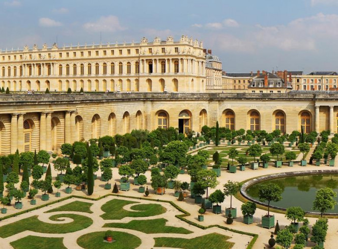
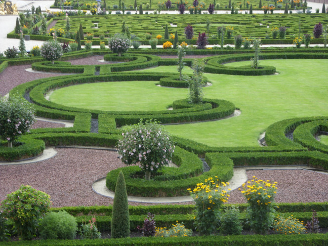

У різних культурах мистецтво створення декоративних садів розвивалося різними шляхами - в Персії та Індії переважали правильні геометричні форми, простір розділяли на дрібні і великі квадрати і густо засаджували рослинами. Тут вперше почали використовувати прийом, який тепер називається міксбордер - це формування простору, в якому різні види рослин густо висаджуються поруч, створюючи різнобарвний килим. У першому столітті до нашої ери мистецтво ландшафтного дизайну зародилося на Далекому Сході - у Китаї, де сади виконували не лише декоративну, а й духовну функцію. У Японії ландшафтний дизайн розвивався під впливом Китаю, як і багато інших мистецтв. Азіатські сади символізували світ у мініатюрі, і людина, споглядаючи сад, відкривала для себе шлях досягнення гармонії зі світом. У Європі перші декоративні сади виникли на території стародавньої Греції, і виконували не тільки естетичну функцію, але і служили місцем проведення релігійних обрядів і лекцій філософів і вчених. Характерною рисою грецьких садів служили декоративні колони, статуї, сходи і фонтани. На початку нашої ери вже в стародавньому Римі існувало кілька видів садів, які виконували різні функції, до того ж існували приватні та публічні сади. Це вважається часом розквіту садово-паркового мистецтва в Європі, де з настанням Темних віків та раннього Середньовіччя мистецтво ландшафтного дизайну зовсім змінило свою форму. Сади існували переважно в монастирях, де ченці вирощували плодові культури та лікарські рослини. Планування ділянок докорінно змінилося, але в якості декоративних прийомів саме в цей період почали використовувати перголи та трельяжі. На території перших університетів студенти та викладачі розбивали перші ботанічні сади, в яких були представленні садові декоративні рослини. З початком епохи Відродження почало відроджуватися і стародавнє мистецтво оформлення садових ділянок. Пишні палаци, що прийшли на зміну похмурим фортам, не тільки декорувалися всередині і зовні, а й відповідним чином декорувалася ділянка перед фасадом. Європейські сади вражали великою кількістю вигадливих декоративних елементів - наслідування античності започаткувало моду на колони, фонтани, різні водойми і системи ставків з гротами, штучними водоспадами і каналами.
Ландшафтний дизайн в його сучасному вигляді зародився наприкінці XIX століття, і причиною тому став технічний прогрес, що призвів до тотальної урбанізації. Міський простір теж потребує розумної організації та озеленення, усвідомили архітектори і садівники, які тепер працювали разом, щоб надати місту нового вигляду і створити нове поняття - громадські парки і сади. На сьогодні в ландшафтному дизайні спостерігається тенденція повернення до природи - на піку популярності зараз "дикі" ділянки і еко-сади, а садове мистецтво набуло незліченної кількості незвичайних форм - озеленення дахів і стін хмарочосів, створення зелених екосистем в будівлях.
 